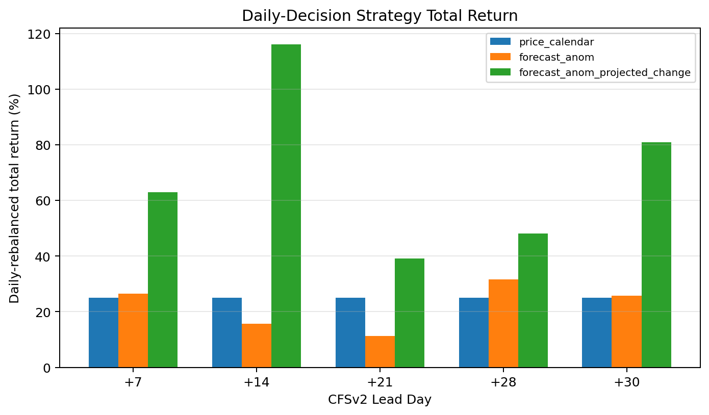
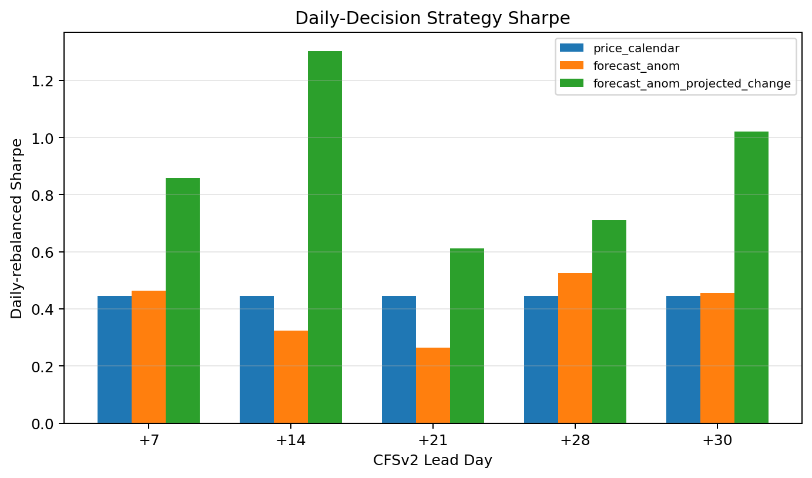
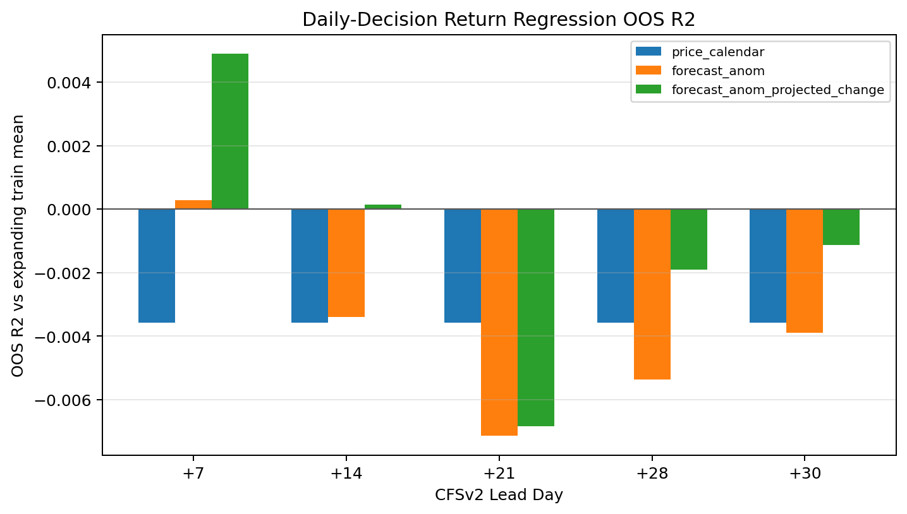
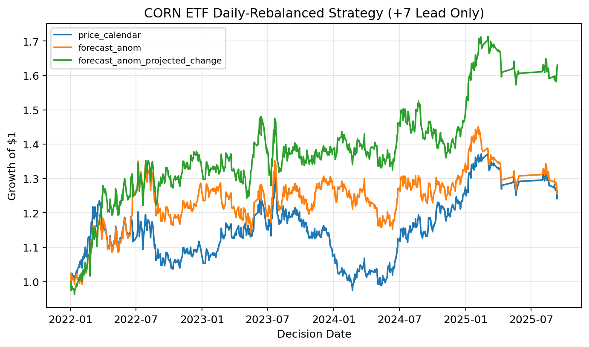
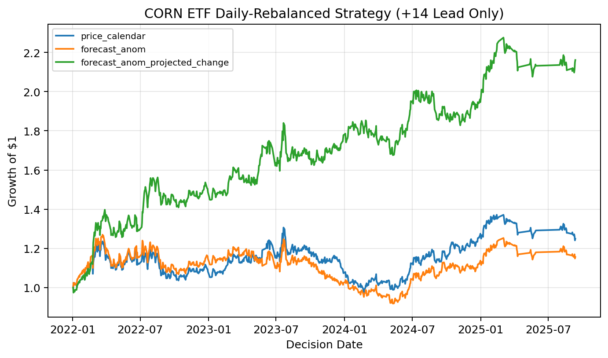
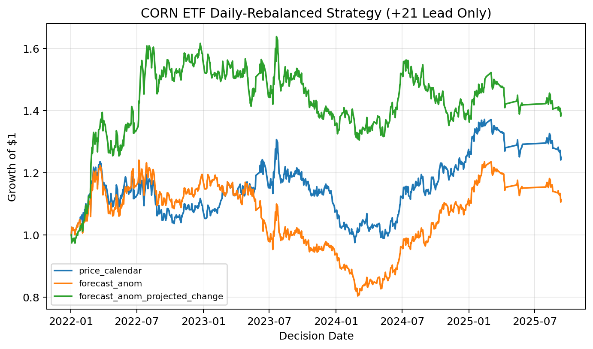
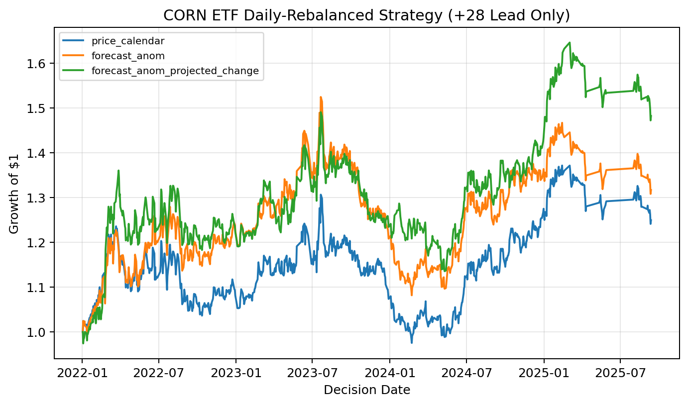
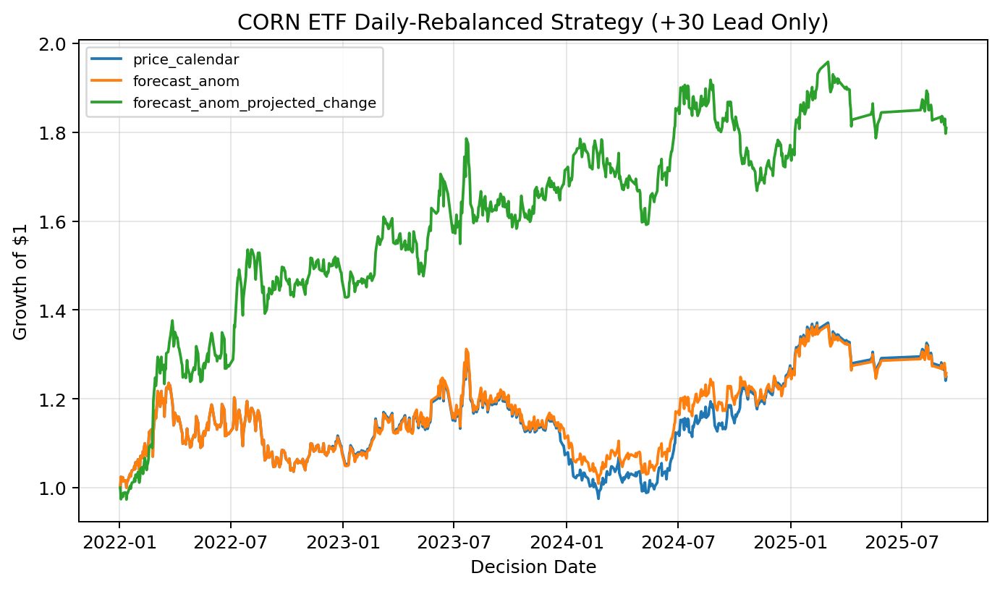

Weather Forecast Signals and Daily Trading Results#
Why Weather Signals Matter#
Corn prices are closely tied to expectations about crop supply. Heat and dryness during key growing periods can change yield expectations, and those expectations can move futures-linked instruments such as the Teucrium Corn ETF (CORN).
The weather experiment asks whether forward-looking weather forecasts add trading value beyond a price/calendar baseline. Instead of predicting weekly classes, this part of the project makes daily trading decisions using short-lead weather forecasts.
Experiment Design#
The weather pipeline combines three information sets:
Information set |
Role in the experiment |
|---|---|
Price and calendar baseline |
Captures recent |
CFSv2 forecast anomalies |
Measures expected heat, dryness, and heat-by-dryness risk at specific forecast leads. |
ERA5/GPCP observed anomalies |
Measures current physical conditions before the forecast horizon. |
Each model predicts the future 5-trading-day CORN return. Trading performance is measured through a daily-rebalanced strategy that applies the model signal to the next one-day realized return.
The out-of-sample period covers 2022 through 2025. Each lead/model comparison uses 826 daily decision rows and an expanding yearly training design.
Lead Days and Model Variants#
The analysis focuses on short forecast leads:
Lead day |
Interpretation |
|---|---|
+7 |
One-week-ahead weather information. |
+14 |
Two-week-ahead weather information. |
+21 |
Three-week-ahead weather information. |
+28 |
Four-week-ahead weather information. |
+30 |
Roughly one-month-ahead weather information. |
For each lead, the experiment compares:
Model variant |
Description |
|---|---|
|
Price and crop-calendar baseline. |
|
Baseline plus CFSv2 forecast anomaly factors. |
|
Baseline plus forecast anomalies measured relative to observed initialization conditions. |
The projected-change feature set is the most economically intuitive weather signal: it asks whether the forecast is becoming hotter or drier relative to the current observed state.
Weather Feature Construction#
CFSv2 forecast anomalies are computed relative to lead-specific CFSv2 model climatology:
forecast_anom_{t,h} = CFSv2_forecast_{t,h} - CFSv2_climatology_{h, day-of-year}
The default climatology mode is expanding, so each date only uses earlier dates when estimating climatology. The day-of-year climatology uses a 10-day window.
The script also builds initialization observed anomalies from ERA5/GPCP using a trailing 7-day average shifted by one day to avoid look-ahead.
The main weather variables are:
heat_forecast_z = z-scored CFSv2 temperature anomaly
dryness_forecast_z = -1 * z-scored CFSv2 precipitation anomaly
heat_x_dryness = heat_forecast_z * dryness_forecast_z
Projected-change variables compare the forecast anomaly with the initialization observed anomaly:
heat_projected_change = heat_forecast_z - init_obs_heat_z
dryness_projected_change = dryness_forecast_z - init_obs_dryness_z
projected_heat_x_dryness = heat_projected_change * dryness_projected_change
Higher heat and higher dryness are both coded as higher supply-risk signals.
Headline Weather Results#
The strongest result is the +14-day projected-change model. It delivers the highest daily-rebalanced total return and Sharpe ratio in the no-buffer comparison.
Lead |
Model |
Total return |
Sharpe |
Max drawdown |
OOS R2 |
Corr. |
|---|---|---|---|---|---|---|
+14 |
|
116.1% |
1.303 |
-11.7% |
0.0001 |
0.086 |
+30 |
|
80.9% |
1.022 |
-13.0% |
-0.0011 |
0.083 |
+7 |
|
63.0% |
0.859 |
-13.6% |
0.0049 |
0.102 |
+28 |
|
48.2% |
0.711 |
-23.8% |
-0.0019 |
0.080 |
+21 |
|
39.1% |
0.612 |
-20.3% |
-0.0068 |
0.070 |
Baseline |
|
24.9% |
0.444 |
-25.3% |
-0.0036 |
0.072 |
The trading metrics are stronger than the regression diagnostics. OOS R2 and correlation are small, so the result should be interpreted as an exploratory trading signal rather than a high-precision return forecast.
Summary Charts#
Daily-Rebalanced Total Return#
{kind=link}

The total return summary shows that projected-change weather factors dominate the price/calendar baseline across the most important short leads. The +14 and +30 projected-change models are the clearest standouts.
Daily-Rebalanced Sharpe Ratio#
{kind=link}

The Sharpe comparison tells the same story in risk-adjusted terms. The +14 projected-change model has the strongest Sharpe, while the +7 and +30 projected-change models also improve meaningfully over the baseline.
Out-of-Sample R2#
{kind=link}

The R2 chart is much more conservative than the trading charts. Only a few specifications are near or slightly above the train-mean benchmark. This gap is important: the weather models are not explaining large fractions of daily return variance, but they may still rank or sign returns well enough to improve a trading rule.
Lead-Specific Equity Curves#
Lead +7#
{kind=link}

At +7 days, the projected-change signal improves both total return and risk-adjusted performance relative to the price/calendar baseline.
Lead +14#
{kind=link}

The +14-day lead is the strongest result. The projected-change model compounds well through the test period and has the best Sharpe ratio in the weather experiment.
Lead +21#
{kind=link}

The +21-day lead remains positive but is less compelling than +14 and +30. Weather information still helps, but the signal is weaker.
Lead +28#
{kind=link}

The +28-day lead shows positive performance for the projected-change model, but with larger drawdowns than the best short-lead results.
Lead +30#
{kind=link}

The +30-day projected-change model is the second strongest weather result by Sharpe and total return. This suggests that one-month-ahead forecast shifts may contain useful market information.
Interpretation#
In short, the weather experiment suggests that CFSv2 forecasts contain incremental information for CORN ETF returns, but the useful signal is concentrated in short forecast leads and is strongest when forecast anomalies are combined with projected-change variables. The price/calendar baseline is already demanding, so the weather models are being tested against recent market behavior and crop-season controls, not against a naive benchmark. The strongest empirical pattern is that projected changes in heat and dryness risk appear more market-relevant than forecast levels alone. The evidence is encouraging, but it should be presented as exploratory signal value rather than as a production-ready trading rule.
Discussion#
The main empirical question is whether subseasonal weather forecast information contains incremental predictive content for CORN ETF returns beyond standard price and calendar controls. The results suggest that the answer is conditionally yes, but the useful signal is concentrated in short leads and is stronger when the model uses both forecast anomalies and projected-change anomalies.
The price/calendar model is a demanding baseline because it already includes lagged returns, recent volatility, momentum, month and quarter controls, cyclical week-of-year and day-of-week controls, and crop-season dummies. Therefore, the weather models are not simply being compared against a naive constant-return benchmark. They are tested on whether CFSv2 weather forecast information improves prediction after controlling for basic price dynamics and seasonality.
Across the tested leads, the clearest evidence appears at the short forecast horizons, especially the +7-day and +14-day leads. This is economically intuitive. CORN ETF is a futures-based corn exposure, so the most relevant weather information is likely information that can change market expectations over the next several trading days. Longer-lead forecasts may still contain useful climate information, but their noise level and forecast uncertainty are higher, which can weaken their relationship with short-horizon ETF returns.
The comparison between the forecast_anom and forecast_anom_projected_change models is especially important. The forecast_anom model asks whether the CFSv2 forecast is hot or dry relative to the model’s lead-specific annual cycle. The projected-change variables ask a more market-relevant question: given the weather conditions already observed near the decision date, does the forecast imply that heat or dryness risk will intensify or fade? This distinction matters because futures prices should respond more to new information than to weather states that are already known or already priced.
The trading results should be interpreted as exploratory rather than as a production trading system. The regression target is the future 5-trading-day CORN ETF return, but the plotted trading strategy converts the predicted 5-day return into a daily long/short position and compounds realized next-day returns. This makes the equity curves useful for comparing signals, but they are not a fully realistic implementation of a weekly holding-period strategy. In addition, transaction costs are included in a simplified way, and the backtest does not model all real-world frictions such as bid-ask spreads, ETF liquidity, borrow costs for short positions, tax treatment, or market impact.
A second caution is that regression fit and trading performance are not identical. A model can improve OOS R2 or prediction-realized correlation without always producing the highest Sharpe ratio, because trading performance also depends on the sign threshold, position turnover, return volatility, and drawdown profile. For this reason, the most convincing evidence is not any single metric, but the joint pattern across OOS R2, correlation, direction accuracy, Sharpe ratio, drawdown, and equity-curve behavior.
The current results are consistent with the idea that short-horizon CFSv2 forecasts contain some tradable information for CORN ETF returns, particularly when forecast anomalies are measured relative to the current observed weather state. However, the effect is not uniform across all leads or all model specifications. The strongest conclusion is therefore not that weather forecasts mechanically predict CORN ETF returns, but that projected changes in Corn Belt heat and dryness forecasts appear to add incremental information beyond price/calendar controls in the 2022-2025 out-of-sample period.
Economic Interpretation#
The economic mechanism is based on corn supply risk. CORN ETF provides exchange-traded exposure to CBOT corn futures rather than physical corn. Because corn futures prices reflect market expectations about future corn supply and demand, weather forecasts can matter when they change expectations about crop stress, yield risk, harvest conditions, or storage and transportation risk. During the U.S. growing season, hot and dry Corn Belt forecasts are plausibly bullish because they can increase expected supply risk. Outside the main growing season, the interpretation is less direct, which motivates future work using season-specific weather factors.
The projected-change model has a natural economic interpretation. A hot and dry forecast may not be new information if the Corn Belt is already hot and dry. But a forecast that implies a transition from normal current conditions to much hotter or drier future conditions may represent a more meaningful update to market expectations. This is why the projected-change variables may capture a more tradable signal than the forecast anomaly variables alone.